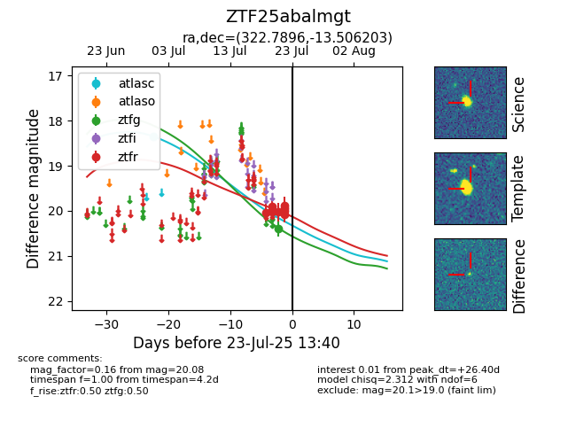

Target ZTF25abalmgt at 2025-07-23 13:40, see:
FINK: fink-portal.org/ZTF25abalmgt
Lasair: lasair-ztf.lsst.ac.uk/objects/ZTF25abalmgt
ALeRCE: alerce.online/object/ZTF25abalmgt
alt names
ZTF25abalmgt (ztf,fink)
coordinates:
equatorial (ra, dec) = (322.7896,-13.50620)
galactic (l, b) = (38.8069,-41.44790)
photometry
last atlasc=18.35, ztfg=20.39, ztfr=20.08
1 atlasc, 1 ztfg, 9 ztfr detections
